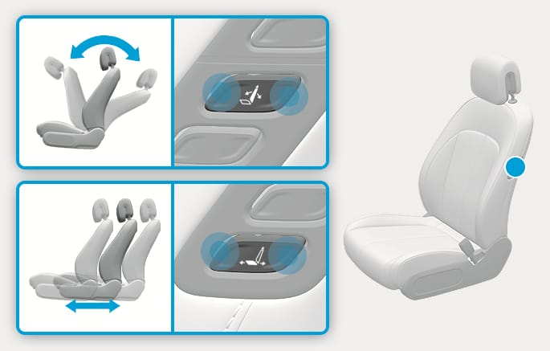
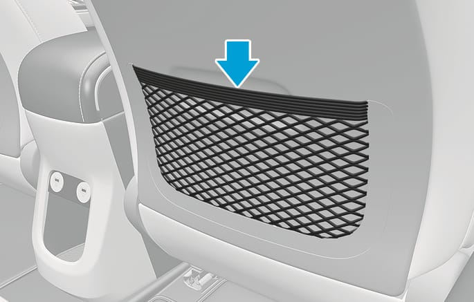

동승석 편의 기능
동승석 조절 스위치

2C_WorkinSwitch
운전석이나 동승석에서 간편하게 동승석 위치를 조절할 수 있습니다.
뒷좌석에 승객이 탑승하거나 하차하는 중에는 좌석 조절 스위치를 작동하지 마십시오. 좌석이 갑자기 움직여 승객이 다칠 수 있습니다.
스위치 앞부분 또는 뒷부분을 눌러 좌석을 앞뒤로 이동하거나 등받이 각도를 조절하십시오.
등받이 포켓

2C_SeatBackPocket
동승석 뒷면에는 뒷좌석 탑승자를 위한 수납 포켓이 설치되어 있습니다.
-
포켓에 날카로운 물건을 보관하지 마십시오. 차량이 갑자기 멈추거나 사고가 발생하는 경우 뒷좌석 탑승자가 심하게 다칠 수 있습니다.